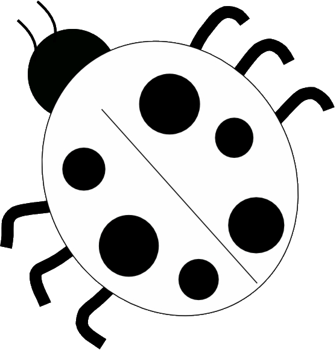

HawkTracer is an OpenSource project made by community, and for community.
Writing the code is only one of the ways of helping with the project. There's many other options you can choose to make HawkTracer better!

Bug reporting
Found a bug? Something doesn't work as expected? Report it on the bug tracker.
Documentation
The project's documentation always requires improvements. Open a pull request to make changes.
Source code
Source code improvements are always more than welcome. See the Contribution Guideline before submitting a pull request. You can also look at open issues to help fixing one of the known problems.